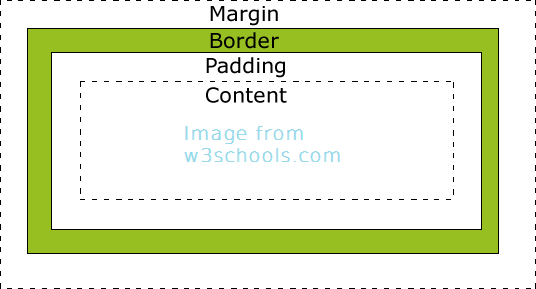

Week 1
Version Control and GitHub
9/13/2015
I believe that an introduction is in order. My name is John Polhill. I am 20 years old currently living in Aurora IL and, like many of you that are reading this post, this is my first week of phase 0 in Dev Bootcamp. So, with that out of the way I will introduce the first topic. What are the benefits of version control? Well, I personally have not found version control to be very useful for the projects I would normally work on; however, that is only because I am a hobbyist when it comes to programming and all the work I do is solo and for fun. So, I have yet the need to keep record of my progress on a project. I do believe that when working on larger, team oriented projects that the benefits of using version control would increase exponentially. Having the ability to record the work of multiple parties and manage which of those works are accepted would be a huge boon to organization and productivity. As such, I am very certain that version control will become very beneficial for me in the future.
Now that I've covered how I see version control, I will mention the software that has provided it, Git. Git will record different states of progress that one will be able to revert to and from. This allows for the ability to make major alterations without the fear of ruining the current working state of a project. Also, when a state is saved, or committed, one may include a message to describe the changes made to a project. This also helps when working on a team so members can relay information on the work they have done and at what times it was done. The ability to share information is vital to any team's success.
Speaking of sharing, one does not often mention git without thinking of GitHub, although the two words are not interchangeable. GitHub further increases the effectiveness of sharing information by allowing users to create repositories that can be cloned to ones own computer. Changes can then be made to any of the original code and then pushed back into GitHub. If The master user believes that the changes made were for the better he may choose to accept this push and then pull it into the original project. This is an incredibly useful tool for open source projects and any team project. Members of a team don't even have to be in the same country to be able to work together and share information and code with each other. Technology is astounding in it's ability to relay information fast and efficiently, and this ability only increases the pace of which technology expands.
Week 3
Margins Padding and Borders
9/22/2015
Margin, border, and padding are some of the most fundamental parts of css when it comes to positioning elements on your web page, So here is a quick introduction followed by a couple tricks that you may not yet have learned. In the simplest terms, border is the outline of the rectangle that is your element, margin is the extra distance outside of the border, and padding is the distance from the border to the content. I think this picture sums it up very nicely.

So, lets start with a few tips for using margin. To center an element horizontally, define a width and set the left and right margins to auto.
/* CSS */
Section {
width: 300px;
margin: 0 auto;
}
Also, vertical margins will collapse upon each other rather than add together. The distance of elements that are stacked on top of each other will be the greater of the margins for those elements, rather than the total distance of both element's margins. For example:
<!-- html -->
<h1>Big Words</h1>
<p>superfluous polysyllabic words including three monosyllabic words<p>
/* CSS */
h1 {
margin: 20px 0;
}
p {
margin-top: 30px;
}
In this scenario, h1 has a bottom margin of 20px, and p has a top margin of 30px, so one would expect the total distance between h1 and p would be 50px. However, the distance will actually be the greater of the two, so the total distance will be 30px. But, if you add a border the total distance will add instead, making the total distance 50px.
Now lets get a few tips for padding. The size of an element when using padding is equal to the width or height plus the padding, rather than the just the assigned width or height. For example:
/* CSS */
div {
width: 100px;
padding: 20px;
}
On might expect the total width of the box to be 100px, since it was assigned a width of 100px. However, the actual width of the box will be 140px (100px + 20px + 20px). You may choose to change this using:
/* CSS */
div {
width: 100px;
padding: 20px;
box-sizing: border-box;
}
This will make the total width equal to 100px with 20px padding between the content and border.
Also, borders are cool... Okay, since borders are very straight forward I will include a special bonus tip instead. If you would like to have an element that changes when the mouse hovers over it try this:
/* CSS */
div {
border: 1px solid black;
transition: 0.5s;
}
div:hover {
border: 1px solid red;
transition: 0.5s;
}
This will make it so that when you hover your mouse over a div its border will turn red instead of black, and back to black when your done hovering. The transition will also make this shift gradual over a certain time rather than instant. Well, hopefully you learned something new by reading this. Hope you all are having fun at DBC!
Week 4
Arrays and Hashes
9/30/2015
Arrays and hashes are both able to store multiple objects, but in different ways. So, here are some interactive demonstrations to show how each work.
First, the array which stores objects in a linear fashion, much like a to do list. You can add, remove, or change items in the list. Always remember, an array counts from 0.
Okay, now for hashes. A hash works by using a key and value. The key points to a value, and you may have multiples of the same value, but each key must be unique.
Anyway, I hope that these interactive examples helped explain arrays and hashes better than I could with words.
Week 5
Partition
10/11/2015
The partition method can be used on any object that includes enumerable, and is useful for when one would like to split an enumerable into an array consisting of two distinct enumerables based on the passed blocks expression.
Here is what the official ruby doc says about the partition method
partition { |obj| block } → [ true_array, false_array ]
partition → an_enumerator
Returns two arrays, the first containing the elements of enum for which the block evaluates to true, the second containing the rest. If no block is given, an enumerator is returned instead.
(1..6).partition { |v| v.even? } #=> [[2, 4, 6], [1, 3, 5]]
So, if you ever need to divide an array or a hash along a single seem, such as even or odd, greater than 0 or less than or equal to 0, item is a string or an integer, etc. you should consider using partition to expedite the process.
Week 6
Rectangle and Square Class
10/18/2015
Classes can be used to represent almost any real world object, but for this demonstration I will be using the very simple object, Rectangle.
Class Rectangle
def initialize(width, height)
@width = width
@height = height
end
def area
@width * @height
end
def parameter
@width*2 + @height*2
end
end
But, what if you want to make another object, Square? Well, there is no need to write another class with this much content. Since we know that all squares are rectangles with the height equaling the width, we can have the square class inherit from rectangle.
Class Square < Rectangle
def initialize(width)
@width = width
@height = width
end
end
This lets the Square class inherit from the Rectangle class, thus allowing instances of the Square class to use the methods from the Rectangle class. So, now if you can do this:
small_square = Square.new(5)
small_square.area # => 25
small_square.parameter # => 20
Week 7
Ruby Class vs Javascript Constructor Function
10/22/2015
Both classes in Ruby and Javascript constructor functions are used as templates for creating objects ,so for those of you who don't like to read too much, here is a short and concise comparison of Ruby classes and Javascript constructor functions in the making of a Car object.
Define Ruby class
class Car
end
Define Javascript constructor function
function Car() {
}
Pretty stright forward so far, this is just how to define a new class/constructor-function. Next I'll show how to initialize their variables.
Ruby initialization
class Car
def initialize(speed, color)
@speed = speed
@color = color
end
end
Javascript initialization
function Car(speed, color) {
this.speed = speed;
this.color = color;
}
The above creates the instance variables speed and color. Ruby initializes using the initialize method, while Javascript's constructor function calls it's self when created, so the variables get initialized in the body of the function. Now for adding an instance method.
Ruby instance method
class Car
def initialize(speed, color)
@speed = speed
@color = color
end
def max_speed
return "This car can go over #{@speed}mph!"
end
end
Javascript instance method
function Car(speed, color) {
this.speed = speed;
this.color = color;
}
Car.prototype = {
max_speed: function max_speed() {
return "This car can go over " + this.speed + "mph!";
}
}
Now it's starting to look a bit different. Javascript functions get a property called prototype, and every object constructed inherits the properties from it. Lastly, it's time to instantiate objects.
Ruby instantiate object
class Car
def initialize(speed, color)
@speed = speed
@color = color
end
def max_speed
return "This car can go over #{@speed}mph!"
end
end
myCar = Car.new(9000, "red")
myCar.max_speed # => "This car can go over 9000mph!"
Javascript instantiate object
function Car(speed, color) {
this.speed = speed;
this.color = color;
}
Car.prototype = {
max_speed: function max_speed() {
return "This car can go over " + this.speed + "mph!";
}
}
var myCar = new Car(9000, "red");
myCar.max_speed(); // => "This car can go over 9000mph!"
There, that is how one would do basically the same thing in either ruby or javascript. I hope this was good starting point for learning to adapt between more than one language.
Week 8
Dynamic vs Typed Variables
11/2/2015
There are two ways that programming languages handle variable declaration, dynamic typing or static typing.
Static typing is when the variable type known at compile time, thus the type must be declared by the programmer. Examples of languages that use this kind of typing are Java, C#, C, C++. The main advantage of this kind of typing language is that these variables can be checked by the compiler, which will check for bugs.
int num = 5;
String word = "hello";
boolean isStatic = true;
//This would raise a type exception
num = word;
Dynamic typing is when variable type is interpreted at run time, this the type does not have to be declared. Examples of languages that so this would be Ruby, Javascript, Python, and Perl. The advantage of this kind of language is that programming can be a bit faster because you can eschew declaring a type, though bugs can be a little harder to find.
var num = 5;
var word = "hello";
var isStatic = false;
//This would be fine
num = word;